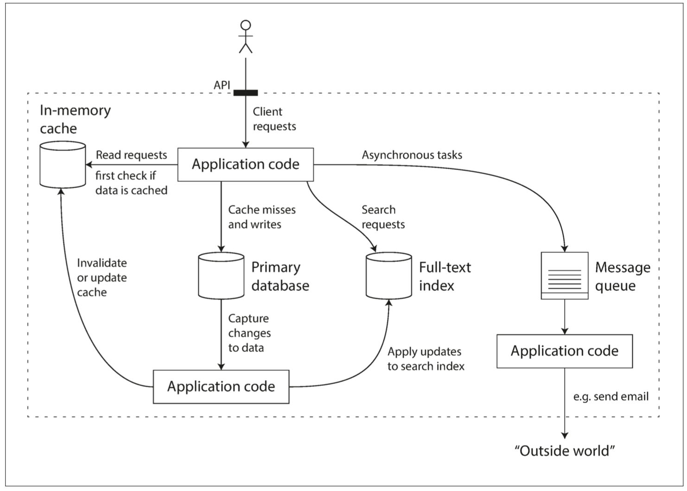

DDIA 阅读笔记第一章：可靠性、可扩展性和可维护性
摘要
最近开始读设计数据密集型应用（《Designing Data-Intensive Applications》，DDIA），记录一下自己的阅读笔记，过程中的思考，本文是第一章。
根据负载特点，应用可以简单分为：
- 计算密集型（Compute-Intensive）：需要高算力来执行任务，例如仿真、渲染、大模型训练 & 推理、高性能计算（HPC）等。
- 任务的瓶颈在于算力，即计算资源（cpu、gpu 等）。
- 数据密集型（Data-Intensive）：以海量数据的存储、检索、分析为重点，例如数据库、其他存储组件（缓存、消息队列等）。
- 任务的瓶颈在于海量和 IO。
互联网应用，大部分都是数据密集型的。例如淘宝包含了海量商品、商家、订单、评论数据，用户的操作大部分是对这些数据的增删改查。这样的系统不仅需要能够处理亿万量级的数据，还要支持高并发、高可用、高性能，这是很有挑战的。
数据系统
通用的标准组件
数据密集型应用通常由标准组件构建而成，标准组件提供了很多通用的功能；例如，许多应用程序都需要：
- 存储数据，以便自己或其他应用程序之后能再次找到 （数据库，即 databases）
- 记住开销昂贵操作的结果，加快读取速度（缓存，即 caches）
- 允许用户按关键字搜索数据，或以各种方式对数据进行过滤（搜索索引，即 search indexes）
- 向其他进程发送消息，进行异步处理（流处理，即 stream processing）
- 定期处理累积的大批量数据（批处理，即 batch processing）
数据系统（data system） 是非常成功的抽象，为我们提供了这些通用的能力。例如 MySQL：
- 存储数据：这是最基本的
- 缓存：8.0 之前的查询缓存，以及 Buffer Pool 中的页缓存
- 索引：B + 树索引、前缀索引
分类
通常认为，数据库、消息队列、缓存等工具分属于几个差异显著的类别。虽然数据库和消息队列表面上有一些相似性 —— 它们都会存储一段时间的数据 —— 但它们有迥然不同的访问模式，这意味着迥异的性能特征和实现手段。
使用数据系统这样的总称，是因为近些年来，出现了许多新的数据存储工具与数据处理工具。它们针对不同应用场景进行优化，因此不再适合生硬地归入传统类别。类别之间的界限变得越来越模糊。例如：
- 数据存储可以被当成消息队列用（Redis）
- 消息队列则带有类似数据库的持久保证（Apache Kafka）
一个典型的应用，会将总体任务拆分为一系列能被单个工具高效完成的任务，通过应用代码将他们缝合起来。例如，一个典型的架构如下：

可靠性
典型期望
人们对可靠软件的典型期望包括：
- 功能：应用程序表现出用户所期望的功能。
- 容错：允许用户犯错，允许用户以出乎意料的方式使用软件。
- 性能：在预期的负载和数据量下，性能满足要求。
- 安全：系统能防止未经授权的访问和滥用。
所有这些在一起意味着 “正确工作”，可以把可靠性粗略理解为 “即使出现问题，也能继续正确工作”。这里的问题是指 故障（fault），能预料并应对故障的系统特性可称为 容错（fault-tolerant） 或 韧性（resilient）。
- 容错只对特定类型的错误才有意义，系统不可能容忍所有的错误。比如说，如果整个地球（及其上的所有服务器）都被黑洞吞噬了，想要容忍这种错误，需要把网络托管到太空中，这是显然不现实的。
- 故障（fault） 不同于 失效（failure）。故障 通常定义为系统的一部分状态偏离其标准，而 失效 则是系统作为一个整体停止向用户提供服务。容错机制的目的，就是以防因 故障 而导致 失效。
在容错实践中，故意 提高 故障率是有意义的，这可以确保容错机制不断运行并接受考验，从而提高故障自然发生时系统能正确处理的信心，例如 Netflix 公司的 Chaos Monkey。
硬件故障
一旦拥有很多机器，硬件故障（hardware faults）总会发生，包含：硬盘崩溃、内存出错、机房断电、有人拔错网线……
据报道称，硬盘的 平均无故障时间（MTTF, mean time to failure） 约为 10 到 50 年【5】【6】。因此从数学期望上讲，在拥有 10000 个磁盘的存储集群上，平均每天会有 1 个磁盘出故障。
硬件故障通常是随机的、相互独立的，可能有微弱的相关性：
- 例如同一个机架上的不同机器，可能因为机架温度同时失效
- 同一个机房里的机器，可能会因为机房断电、天灾同时失效
但整体还是很微弱的，同时发生故障也是极为罕见的。如果要做更高级别的可用，需要异地多副本存储，但成本也会多倍增加。
处理硬件故障通常会增加冗余，虽然不能根治，但简单易懂：
- 磁盘可以组建 RAID
- 服务器可能有双路电源和热插拔 CPU
- 数据中心可能有电池和柴油发电机作为后备电源
- ...
对大多数应用，硬件冗余完全够了。如果是高可用要求的应用，可能需要多套硬件冗余，并进一步引入完善的软件容错机制。
软件错误
软件系统内部的 系统性错误（systematic error）。这类错误难以预料，而且因为是跨节点相关的（不同节点都运行着同样的系统），所以比起不相关的硬件故障往往可能造成更多的 系统失效【5】。例子包括：
- 特定的错误输入，例如 2012 年 6 月 30 日的闰秒，由于 Linux 内核中的一个错误【9】，许多应用同时挂掉了。
- 用尽共享资源，包括 CPU 时间、内存、磁盘空间或网络带宽。
- 系统依赖的服务变慢，没有响应，或者开始返回错误的响应。
- 级联故障，一个组件中的小故障触发另一个组件中的故障，进而触发更多的故障【10】。
导致这类软件故障的 BUG 通常会潜伏很长时间，直到被异常情况触发为止。这种情况意味着软件对其环境做出了某种假设 —— 虽然这种假设通常来说是正确的，但由于某种原因最后不再成立了【11】。
虽然软件中的系统性故障没有速效药，但我们还是有很多小办法，例如：仔细考虑系统中的假设和交互；彻底的测试；进程隔离；允许进程崩溃并重启；测量、监控并分析生产环境中的系统行为。如果系统能够提供一些保证（例如在一个消息队列中，进入与发出的消息数量相等），那么系统就可以在运行时不断自检，并在出现 差异（discrepancy） 时报警【12】。
人为错误
研发工程师和运维都是人类，人类是不可靠的。一项关于大型互联网服务的研究发现，运维配置错误是导致服务中断的首要原因，而硬件故障（服务器或网络）仅导致了 10-25% 的服务中断。
尽管人类不可靠，但怎么做才能让系统变得可靠？最好的系统会组合使用以下几种办法：
- 以最小化犯错机会的方式设计系统。例如，精心设计的抽象、API 和管理后台使做对事情更容易，搞砸事情更困难。但如果接口限制太多，人们就会忽略它们的好处而想办法绕开。很难正确把握这种微妙的平衡。
- 将人们最容易犯错的地方与可能导致失效的地方 解耦（decouple）。特别是提供一个功能齐全的非生产环境 沙箱（sandbox），使人们可以在不影响真实用户的情况下，使用真实数据安全地探索和实验。
- 在各个层次进行彻底的测试【3】，从单元测试、全系统集成测试到手动测试。自动化测试易于理解，已经被广泛使用，特别适合用来覆盖正常情况中少见的 边缘场景（corner case）。
- 允许从人为错误中简单快速地恢复，以最大限度地减少失效情况带来的影响。 例如，快速回滚配置变更，分批发布新代码（以便任何意外错误只影响一小部分用户），并提供数据重算工具（以备旧的计算出错）。
- 配置详细和明确的监控，比如性能指标和错误率。 在其他工程学科中这指的是 遥测（telemetry）（一旦火箭离开了地面，遥测技术对于跟踪发生的事情和理解失败是至关重要的）。监控可以向我们发出预警信号，并允许我们检查是否有任何地方违反了假设和约束。当出现问题时，指标数据对于问题诊断是非常宝贵的。
- 良好的管理实践与充分的培训 —— 一个复杂而重要的方面，但超出了本书的范围。
可扩展性
系统今天能可靠运行，并不意味未来也能可靠运行。服务 降级（degradation） 的一个常见原因是负载增加，可扩展性（Scalability） 是用来描述系统应对负载增长能力的术语。讨论可伸缩性意味着考虑诸如 “如果系统以特定方式增长，有什么选项可以应对增长？” 和 “如何增加计算资源来处理额外的负载？” 等问题。
描述负载
负载可以用一些称为 负载参数（load parameters） 的数字来描述。参数的最佳选择取决于系统架构，它可能是：
- 每秒向 Web 服务器发出的请求
- 数据库中的读写比率
- 聊天室中同时活跃的用户数量
- 缓存命中率
- 其他东西
除此之外，也许平均值对你很重要，也许瓶颈是少数极端场景。
描述性能
对于 Hadoop 这样的批处理系统，通常关心的是 吞吐量（throughput），即每秒可以处理的记录数量，或者在特定规模数据集上运行作业的总时间 。对于在线系统，通常更重要的是服务的 响应时间（response time），即客户端发送请求到接收响应之间的时间。
延迟（latency） 和 响应时间（response time） 经常用作同义词，但实际上它们并不一样。
- 响应时间是客户所看到的，除了实际处理请求的时间（ 服务时间（service time） ）之外，还包括网络延迟和排队延迟。
- 延迟是某个请求等待处理的 持续时长，在此期间它处于 休眠（latent） 状态，并等待服务【17】。
由于网络传输、系统运行的各种随机性，即使不断重复发送同样的请求，每次得到的响应时间也都会略有不同。这些随机性包括不限于：
- 上下文切换到后台
- 网络数据包丢失与 TCP 重传
- 垃圾收集暂停
- 从磁盘读取的页面错误
- 服务器机架中的震动
因此，响应时间应该被视为分布，并考察这个分布的统计值，例如：平均数、中位数、高百分位点（p95，p99）等。

响应时间的高百分位点（也称为 尾部延迟，即 tail latencies）非常重要，因为它们直接影响用户的服务体验。例如亚马逊在描述内部服务的响应时间要求时是以 99.9 百分位点为准，即使它只影响一千个请求中的一个。这是因为请求响应最慢的客户往往也是数据最多的客户，也可以说是最有价值的客户。另一方面，优化第 99.99 百分位点（一万个请求中最慢的一个）被认为太昂贵了，不能为亚马逊的目标带来足够好处。减小高百分位点处的响应时间相当困难，因为它很容易受到随机事件的影响，这超出了控制范围，而且效益也很小。
服务级别
百分位点通常用于 服务级别目标（SLO, service level objectives） 和 服务级别协议（SLA, service level agreements），即定义服务预期性能和可用性的合同。 SLA 可能会声明，如果服务响应时间的中位数小于 200 毫秒，且 99.9 百分位点低于 1 秒，则认为服务工作正常（如果响应时间更长，就认为服务不达标）。这些指标为客户设定了期望值，并允许客户在 SLA 未达标的情况下要求退款。SLI、SLO、SLA 具体介绍如下：
- 服务级别指标（SLI，service level indicators）：服务真实实时的指标数据，可能包括不限于：性能、响应时间、吞吐量、支持 qps、错误率等，这些指标需要能够被服务的客户认可。
- 服务级别目标（SLO，service level objectives）：服务所提供功能的一种期望状态，使用 SLI 来描述，例如：99% 访问延迟 < 500ms
- 服务级别协议（SLA, service level agreements）：涉及 2 方的合约，双方必须都要同意并遵守这个合约。SLA 用一个简单的公式来描述就是： SLA = SLO + 后果。需要一个通用的货币来奖励 / 惩罚，比如：钱。
应对负载的方法
适应某个级别负载的架构不太可能应付 10 倍于此的负载。如果你正在开发一个快速增长的服务，那么每次负载发生数量级的增长时，你可能都需要重新考虑架构 —— 或者更频繁。
人们经常讨论和使用的方法：
- 纵向伸缩（scaling up，也称为垂直伸缩，即 vertical scaling）：转向更强大的机器
- 横向伸缩（scaling out，也称为水平伸缩，即 horizontal scaling）：将负载分布到多台小机器上
跨多台机器分配负载也称为 “无共享（shared-nothing）” 架构。可以在单台机器上运行的系统通常更简单，但高端机器可能非常贵，所以非常密集的负载通常无法避免地需要横向伸缩。现实世界中的优秀架构需要将这两种方法务实地结合，因为使用几台足够强大的机器可能比使用大量的小型虚拟机更简单也更便宜。
有些系统是 弹性（elastic） 的，这意味着可以在检测到负载增加时自动增加计算资源，而其他系统则是手动伸缩（人工分析容量并决定向系统添加更多的机器）。如果负载 极难预测（highly unpredictable），则弹性系统可能很有用，但手动伸缩系统更简单，并且意外操作可能会更少。
分布式
跨多台机器部署 无状态服务（stateless services） 非常简单，但将带状态的数据系统从单节点变为分布式配置则可能引入许多额外复杂度。出于这个原因，常识告诉我们应该将数据库放在单个节点上（纵向伸缩），直到伸缩成本或可用性需求迫使其改为分布式。
随着分布式系统的工具和抽象越来越好，至少对于某些类型的应用而言，这种常识可能会改变。可以预见分布式数据系统将成为未来的默认设置，即使对不处理大量数据或流量的场景也如此。
没有一招鲜吃遍天的通用可伸缩架构（不正式的叫法：万金油（magic scaling sauce） ）。应用的问题可能是读取量、写入量、要存储的数据量、数据的复杂度、响应时间要求、访问模式或者所有问题的大杂烩。举个例子，用于处理每秒十万个请求（每个大小为 1 kB）的系统与用于处理每分钟 3 个请求（每个大小为 2GB）的系统看上去会非常不一样，尽管两个系统有同样的数据吞吐量。
一个良好适配应用的可伸缩架构，是围绕着 假设（assumption） 建立的：哪些操作是常见的？哪些操作是罕见的？这就是所谓负载参数。如果假设最终是错误的，那么为伸缩所做的工程投入就白费了，最糟糕的是适得其反。在早期创业公司或非正式产品中，通常支持产品快速迭代的能力，要比可伸缩至未来的假想负载要重要的多。
可维护性
软件的大部分开销并不在最初的开发阶段，而是在持续的维护阶段，包括修复漏洞、保持系统正常运行、调查失效、适配新的平台、为新的场景进行修改、偿还技术债、添加新的功能等等。
为了使系统易于维护，考虑软件系统的三个设计原则：
可操作性（Operability）
便于运维团队保持系统平稳运行。
简单性（Simplicity）
从系统中消除尽可能多的 复杂度（complexity），使新工程师也能轻松理解系统（注意这和用户接口的简单性不一样）。
可演化性（evolvability）
使工程师在未来能轻松地对系统进行更改，当需求变化时为新应用场景做适配。也称为 可扩展性（extensibility）、可修改性（modifiability） 或 可塑性（plasticity）。
可操作性
良好的可操作性意味着更轻松的日常工作，进而运维团队能专注于高价值的事情。数据系统可以通过各种方式使日常任务更轻松：
- 通过良好的监控，提供对系统内部状态和运行时行为的 可见性（visibility）。
- 为自动化提供良好支持，将系统与标准化工具相集成。
- 避免依赖单台机器（在整个系统继续不间断运行的情况下允许机器停机维护）。
- 提供良好的文档和易于理解的操作模型（“如果做 X，会发生 Y”）。
- 提供良好的默认行为，但需要时也允许管理员自由覆盖默认值。
- 有条件时进行自我修复，但需要时也允许管理员手动控制系统状态。
- 行为可预测，最大限度减少意外。
简单性
复杂的大型项目会显著拖慢相关人员，增大维护成本。一个陷入复杂泥潭的软件项目有时被描述为 烂泥潭（a big ball of mud） 。复杂度（complexity） 有各种可能的症状，例如：状态空间激增、模块间紧密耦合、纠结的依赖关系、不一致的命名和术语、解决性能问题的 Hack、需要绕开的特例等等。
因为复杂度导致维护困难时，预算和时间安排通常会超支。在复杂的软件中进行变更，引入错误的风险也更大：当开发人员难以理解系统时，隐藏的假设、无意的后果和意外的交互就更容易被忽略。相反，降低复杂度能极大地提高软件的可维护性，因此简单性应该是构建系统的一个关键目标。
因为复杂度导致维护困难时，预算和时间安排通常会超支。在复杂的软件中进行变更，引入错误的风险也更大：当开发人员难以理解系统时，隐藏的假设、无意的后果和意外的交互就更容易被忽略。相反，降低复杂度能极大地提高软件的可维护性，因此简单性应该是构建系统的一个关键目标。
简化系统并不一定意味着减少功能；它也可以意味着消除 额外的（accidental） 的复杂度。 Moseley 和 Marks【32】把 额外复杂度 定义为：由具体实现中涌现，而非（从用户视角看，系统所解决的）问题本身固有的复杂度。
用于消除 额外复杂度 的最好工具之一是 抽象（abstraction）。一个好的抽象可以将大量实现细节隐藏在一个干净，简单易懂的外观下面。一个好的抽象也可以广泛用于各类不同应用。比起重复造很多轮子，重用抽象不仅更有效率，而且有助于开发高质量的软件。抽象组件的质量改进将使所有使用它的应用受益。
例如，高级编程语言是一种抽象，隐藏了机器码、CPU 寄存器和系统调用。 SQL 也是一种抽象，隐藏了复杂的磁盘 / 内存数据结构、来自其他客户端的并发请求、崩溃后的不一致性。当然在用高级语言编程时，我们仍然用到了机器码；只不过没有 直接（directly） 使用罢了，正是因为编程语言的抽象，我们才不必去考虑这些实现细节。
抽象可以帮助我们将系统的复杂度控制在可管理的水平，不过，找到好的抽象是非常困难的。在分布式系统领域虽然有许多好的算法，但我们并不清楚它们应该打包成什么样抽象。
可演化性
系统的需求永远不变，基本是不可能的。更可能的情况是，它们处于常态的变化中，例如：你了解了新的事实、出现意想不到的应用场景、业务优先级发生变化、用户要求新功能、新平台取代旧平台、法律或监管要求发生变化、系统增长迫使架构变化等。
在组织流程方面， 敏捷（agile） 工作模式为适应变化提供了一个框架。敏捷社区还开发了对在频繁变化的环境中开发软件很有帮助的技术工具和模式，如 测试驱动开发（TDD, test-driven development） 和 重构（refactoring） 。
修改数据系统并使其适应不断变化需求的容易程度，是与 简单性 和 抽象性 密切相关的：简单易懂的系统通常比复杂系统更容易修改。但由于这是一个非常重要的概念，我们将用一个不同的词来指代数据系统层面的敏捷性： 可演化性（evolvability） 【34】。
总结
第一章简要介绍了数据系统，并详细讨论了可靠性、可扩展性、可维护性。读完之后，对于三大特性的含义和相关概念有了清晰的了解。